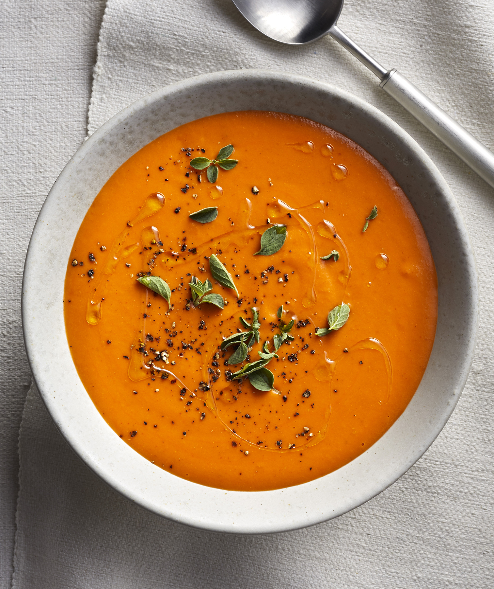

Soup

Description
A creamy tomato soup is typically the result of, well, stirring in heavy cream.
But in this vegan version, bread gives the soup its silky-smooth texture.
Here's how it works: French bread is soaked in rice or almond milk before getting pureed with a cooked tomato mixture flavored with onion, garlic, and oregano.
The vinegar stirred in at the end adds brightness and balance. Serve in bowls garnished with more fresh oregano, a drizzle of olive oil, and freshly-ground black pepper—and the remainder of the French bread on the side.
Keep this recipe handy, because you'll want to keep it in rotation all soup-season long.
This recipe takes about 30 min to make for 4 serving
Ingredient
- 4 ounces French bread, crust removed, soft part cut into 1-inch cubes (about 1¾ cups)
- 1 cup unsweetened rice milk or unsweetened almond milk
- ¼ cup plus 2 tablespoons extra-virgin olive oil, divided
- 1 medium yellow onion, thinly sliced
- 3 cloves garlic, thinly sliced
- 1 teaspoon fresh oregano leaves, plus more for garnish
- 1 (28-oz.) can whole peeled plum tomatoes
- 1 teaspoon kosher salt
- ½ teaspoon freshly-ground black pepper
- 1 tablespoon Champagne vinegar
Directions
- Soak bread in milk until very soft, about 5 to 10 minutes.
- Meanwhile, heat 2 tablespoons of the oil in a Dutch oven over medium. Add onion, garlic, and oregano; cook, stirring occasionally, until softened, about 8 to 10 minutes. Add tomatoes and cook, stirring to crush tomatoes, until slightly thickened, about 15 minutes.
- Transfer tomato mixture to a blender; add bread mixture, salt, pepper, and remaining ¼ cup oil. Process until creamy and smooth, about 1 minute. Pour back into Dutch oven; stir in vinegar. Serve hot, garnished with more oregano.
Nutrition Facts
Good for health